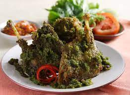

Resep Bebek Cabe Ijo

Bahan
- 1 kg daging bebek
- 600 ml air kelapa tua
- 1/4 kg cabe keriting muda
- 1/2 ruas jari kunyit
- 3 lembar daun jeruk
- 2 siung bawang putih
- 7 buah bawang merah
- 1 ruas jahe
- 2 sdm gula
- 1 sdt ketumbar
- 3 lembar daun salam
- 1 lembar daun kunyit
Langkah
-
Lumuri bebek dengan garam dan cuka. Diamkan selama 15 menit. Cuci
bersih. Tiriskan.
-
Di dalam wajan, panaskan minyak di atas api sedang. Tumis bumbu
halus, daun kunyit, daun jeruk, dan serai hingga harum.
-
Masukkan bebek, aduk hingga tersalut bumbu. Masak hingga bebek
berubah warna.
-
Tuangkan air, didihkan. Kecilkan api. Masak hingga daging bebek
matang dan empuk serta bumbu mengental. Angkat.